Editing Client
Access the Client Details by selecting the Client you want to edit in the Clients list.
You will notice that there are several key tabs, which we will cover in detail.
Details Tab
The details tab will display the following with Client ID being readonly:
Client IDDisplay NamesDocumentation about internationalisation here.Application Typevalue isWeborNative
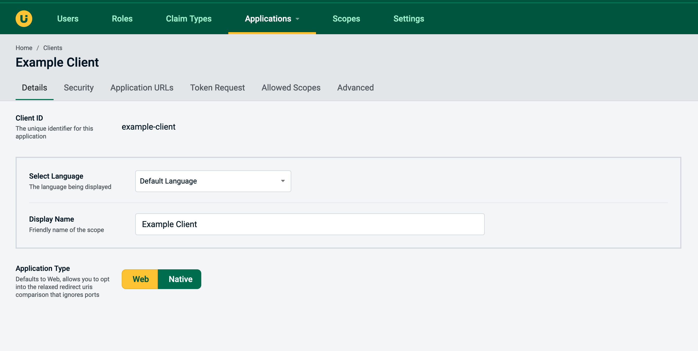
Security Tab
The security tab allows you to modify setting related to client security, they are as follows:
Client Typespecifies if the client can hide the credentials like the secret (confidential) or not (public)Client Secretsecret used by various methods of auth that require itConsent Typespecifies if a consent screen is needed
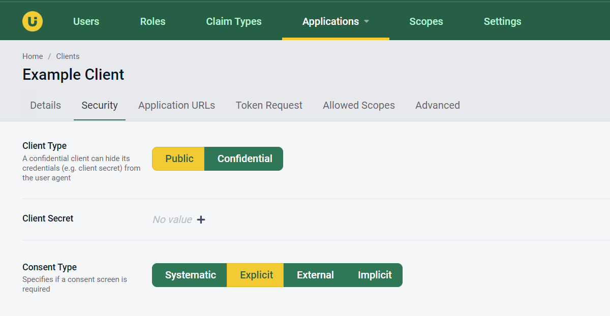
Application URLs
The Application URLs tab allows you to register alloed callback and signout urls for this application.
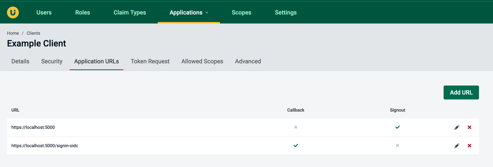
Token Request
The Token Request tab allows you to configure settihbg related to the token request, and they are as follows:
Require PKCEspecify if the client requires PKCE to be usedGrant Typesallowed grant typesResponse Typesallowed response types
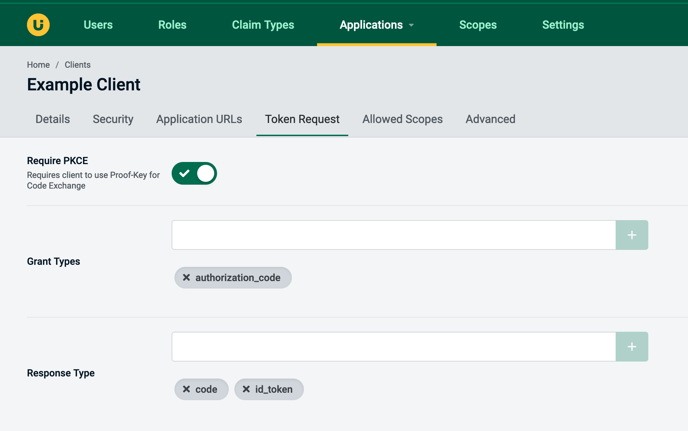
Allowed Scopes
In the Allowed Scopes tabs you can specify scopes allowed to be used by a client, this is displayed as a list of available scopes that can be selected and deselected. Next to each scope there is also a link to the referenced scope in AdminUI.
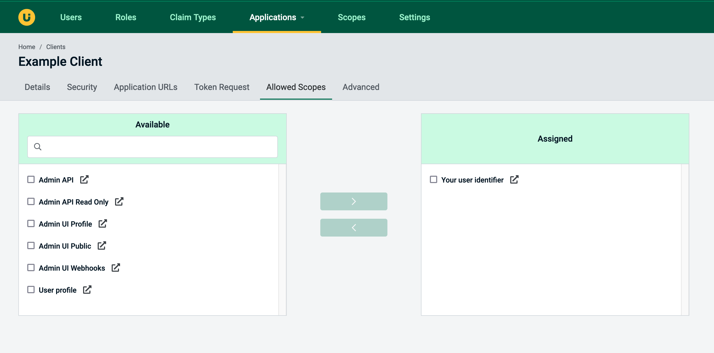
Claims (Machine to Machine Clients Only)
For clients that have the Client Credentials grant type appied you are also able to configure associated claims. Here is an example of what the claims tab looks like on a Postman Client which has the role AdminUI Administrator assigned.
These are the claims that will be stored in the Application propety bag for this client, there is more documentation on why we have done this and how it works here.
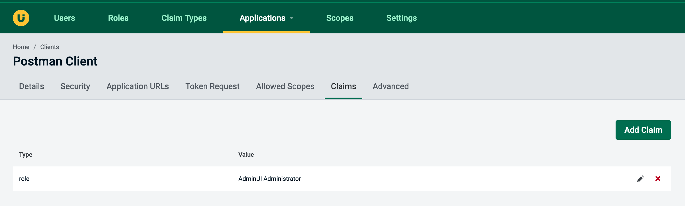
Advanced - Endpoints
The Advanced in point tab will be visible as soon as you click on the Advanced tab in the client edit view, this tab provided access to configuration of endpont permission for the client.
Authorisationallows use of Authorisation endpointsDevice Authorisationallows use of Device Authorisation endpointsIntrospectionallows use of Introspection endpointsEnd Sessionallows use of Logout endpointsRevocationallows use of Revocation endpointsTokenallows use of Token endpoints
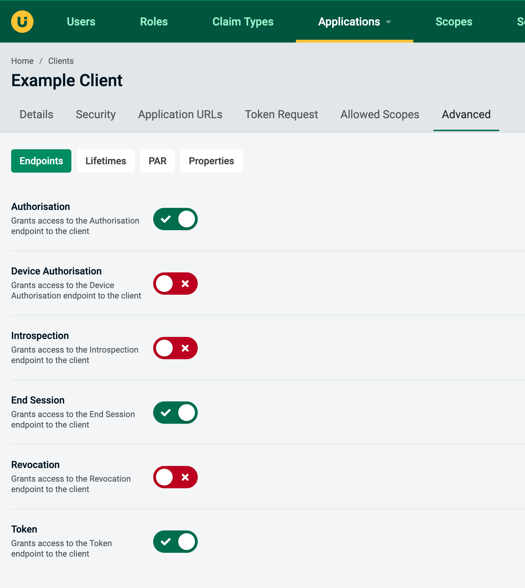
Advanced - Lifetimes
The second tab under the advanced section is Lifetimes. This provides access to configuring the lifetimes of auth codes and access tokens and are as follows:
Authorisation Codeallows you to configure the lifetime of Authorisation Codes at a client levelDevice Codeallows you to configure the lifetime of Device Codes at a client levelUser Codeallows you to configure the lifetime of User Codes at a client levelAccess Tokenallows you to configure the lifetime of Access Tokens at a client levelIdentity Tokenallows you to configure the lifetime of Identity Tokens at a client levelRefresh Tokenallows you to configure the lifetime of Refresh Tokens at a client level
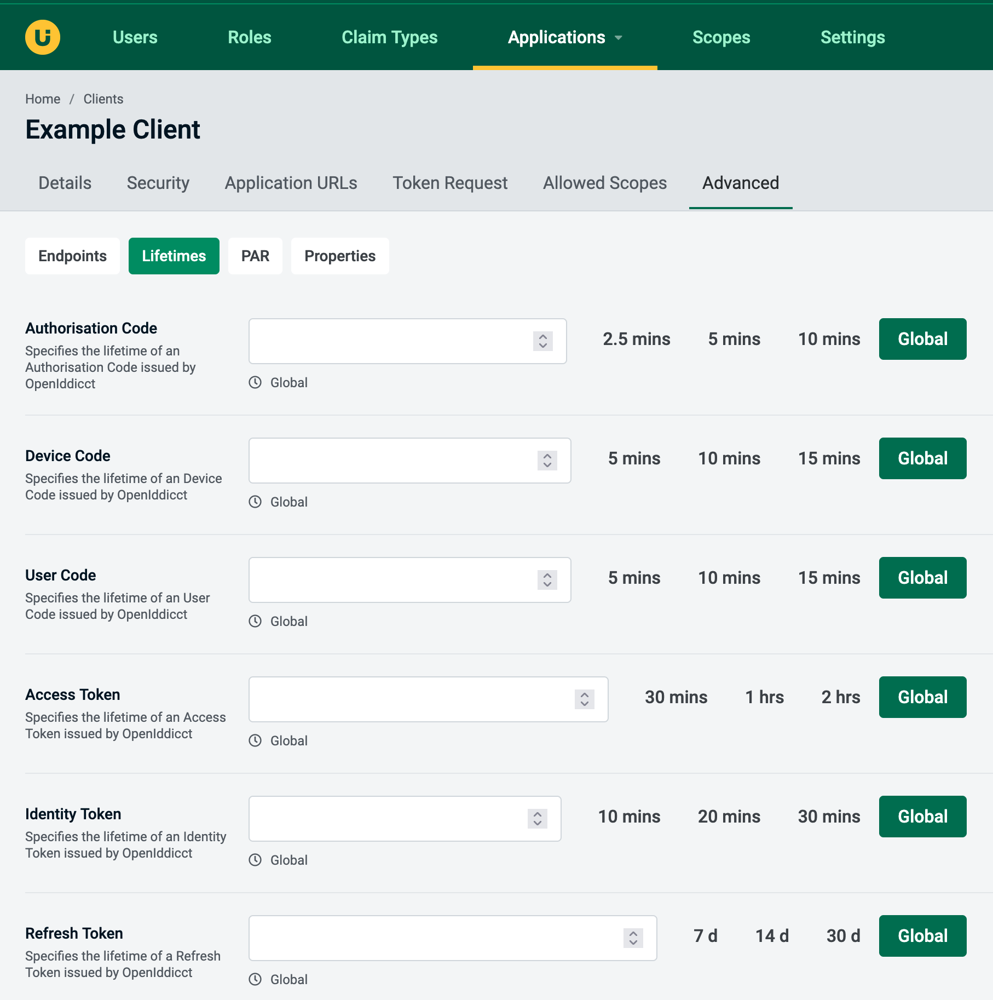
Advanced - PAR
On the PAR advanced tab you will find settings related to Pushed Authorisation Requests.
Enable Pushed Authorisation Endpointallows client access to the Pushed Authorisation endpointRequire Pushed Authorisation Requests (PAR)requires a client to use PAR
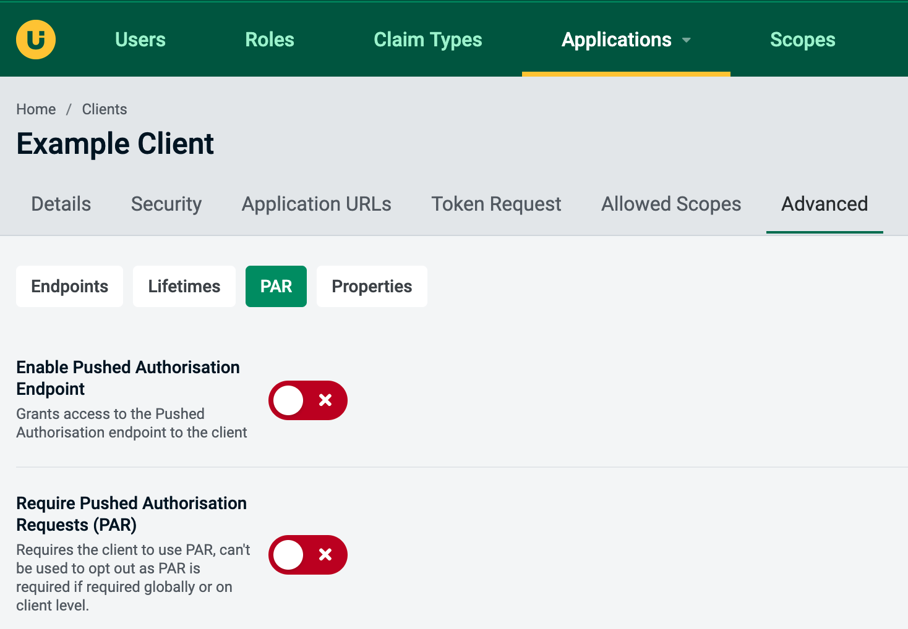
Advanced - Properties
On the Properties tab, you can add, modify and remove entries from the properties bag.
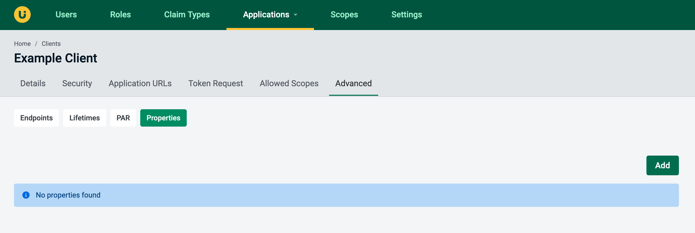
When adding or updating a property, the value must be in valid JSON format:
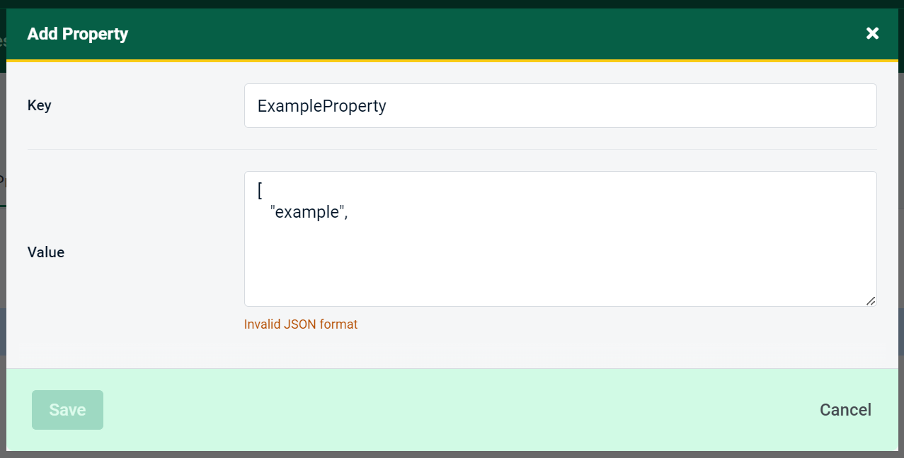
Saving and Deleting
The 'Save All' button at bottom of the page will be enabled with any valid change. When you are done and wish to keep those changes click the save button.
In this same part of the screen there is also a delete button for removing this Client from the database.
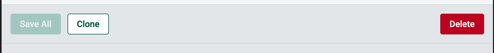